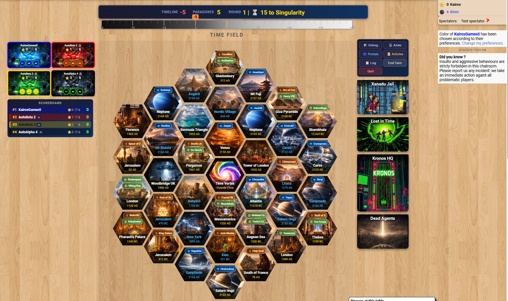

1
Welcome to Kairos: The Big Picture
Runtime: ~8 minutes
Semi-Cooperative
Start here. Kairos is a semi-cooperative 1–4 player game — the team wins or loses together, but the player with the most Kairos at the end is the individual winner. Tour the hex board (36 Time Locations across 3 rings, plus the central Vortex), meet the four core trackers (Kairos, Blots, Main Timeline, Paradox Counter), and understand the two ways the game can end: your team pushes the timeline into positive territory with all their blots cleared, or Kronos drags the Timeline into darkness when time runs out at the Singularity.
Board Tour
Hex Grid & Rings
Kairos & Blots
Main Line Timeline
Paradox Counter
Win / Loss Conditions
Turn Structure
Why first? Every other mechanic references the timeline, blots, and the board layout. This video gives you the map to navigate everything else.
▶ Watch Video 1